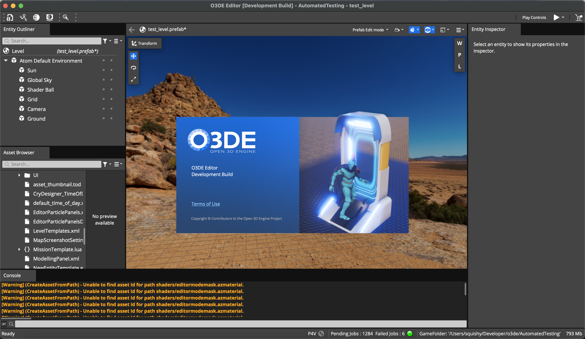
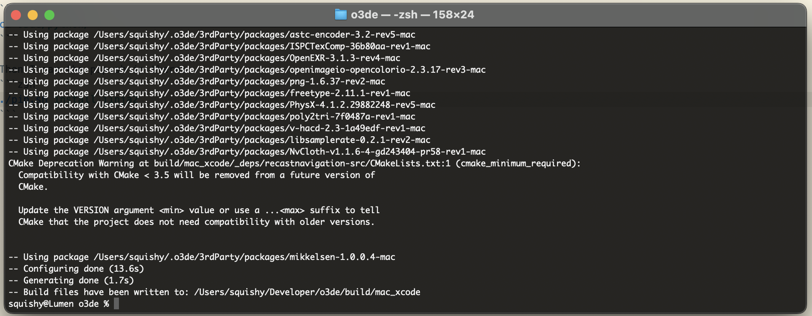
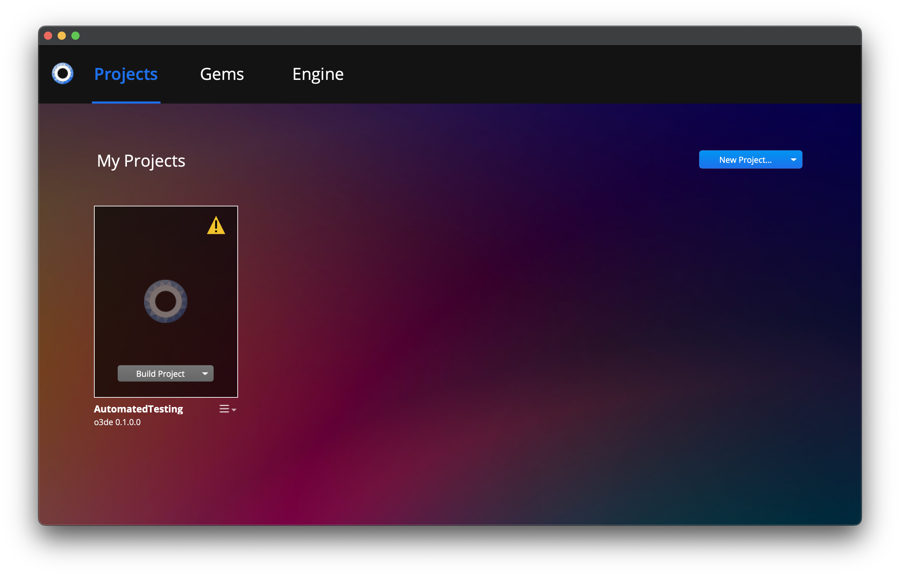
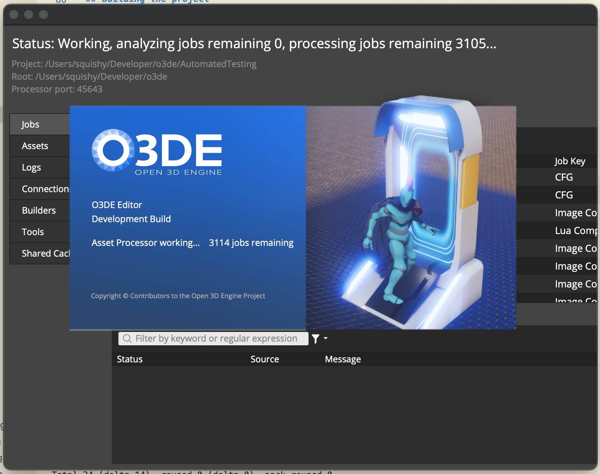
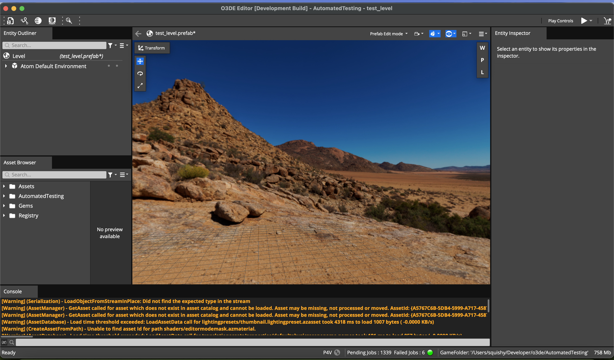

I decided to document my journey on getting O3DE running on macOS, just in-case someone might find it useful. I wouldn't use this for project just based on how unsupported the game engine is running on macOS. Below you'll find the steps that I took.
Why?
I'm looking around for a game engine for macOS. There aren't very many options as of 2024. Especially on Apple Silicon. The two biggest game engines on the scene are Unity and Unreal. However, I have a problem with Unity because ever since the company had gone public the company had made some interesting choices: https://www.theverge.com/2023/9/12/23870547/unit-price-change-game-development
Recently, I found out that Epic Games has pulled the Unreal Tournament series of games from almost every distribution platform. I just want to find an alternative to Unreal Engine for now.
All of this led me to find O3DE: https://o3de.org/
An open source, real-time 3D engine sponsored by the Linux Foundation. How cool is that? The only problem is: THEY DON'T SUPPORT APPLE SILICON OR MACOS OFFICIALLY. Even worse, its not even on the roadmap. Although reading throught the GitHub, it appears as though some users have been able to run a specific version of O3DE on their Macs: https://github.com/o3de/o3de/discussions/11357#discussioncomment-4623529
Getting started
You will need to have Homebrew installed and Git installed on your make. You can install Homebrew by going to: https://brew.sh/
You will also need to have Xcode installed, be sure to grab that off the App Store on your Mac.
Once you have brew installed, we need to get the following:
brew install cmake
brew install git
Once those are installed we need to also install Git LFS:
brew install git-lfs
git lfs install
sudo git lfs install --system
Great! You need to get the macOS equivalent of build-essentials by running:
xcode-select --install
We also will need Rosetta 2 installed if you're using a Mac with Apple Silicon:
sudo softwareupdate --install-rosetta
Cloning the repo
We need to clone a specific version of O3DE to get it to work on macOS. I had issues with just cloning the most up to date repo. These are the steps I did: Clone the initial repository:
git clone https://github.com/o3de/o3de.git
Move into the directory:
cd o3de
Now revert to a specific version:
git reset 4ac8adf --hard
⚠️ If you try to use the latest version, you'll end up with this error:
CMake Error at Code/LauncherUnified/Platform/Mac/launcher_project_mac.cmake:26 (message):
Missing 'Resources' folder. Candidate paths tried were:
/Resources/Platform/Mac /Gem/Resources/Platform/Mac
/Gem/Resources/MacLauncher
Call Stack (most recent call first):
cmake/LYWrappers.cmake:652 (include)
cmake/LYWrappers.cmake:316 (ly_configure_target_platform_properties)
Code/LauncherUnified/launcher_generator.cmake:164 (ly_add_target)
Code/LauncherUnified/CMakeLists.txt:105 (include)
This will take some investigating later on down the road. For now, I just want to see if I can get O3DE running on my MacBook.
Building the project
Once you've reverted the project to the specific version. We can now build the project:
# Configure the editor's build
cmake -B ./build/mac_xcode -S . -G Xcode -DLY_ASSET_DEPLOY_MODE=LOOSE -DLY_ASSET_DEPLOY_ASSET_TYPE=mac
# Build the editor
cmake --build build/mac_xcode --target Editor --config profile
# Run the editor
./build/mac_xcode/bin/profile/Editor.app/Contents/MacOS/Editor
These steps are taken from this GitHub comment: https://github.com/o3de/o3de/discussions/11357#discussioncomment-4623529
Configure the editor's build
When you run cmake to configure the editor's build, you might see an error like this:
---
CMake Error at cmake/3rdPartyPackages.cmake:287 (message):
ly_package: - Unable to get package googlebenchmark-1.5.0-rev2-mac from any
download server. Enable LY_PACKAGE_DEBUG to debug.
Error from server https://d3t6xeg4fgfoum.cloudfront.net - 35 - "SSL connect
error"
---
I found that just running the command again will pull the package for you. The packages that gave me trouble were (this list was almost a mirror image of the requirements.txt file...):
googlebenchmark-1.5.0-rev2-mac
lz4-1.9.3-vcpkg-rev4-mac
expat-2.4.2-rev2-mac
md5-2.0-multiplatform
tiff-4.2.0.15-rev3-mac
squish-ccr-deb557d-rev1-mac
assimp-5.1.6-rev2-mac
xxhash-0.7.4-rev1-multiplatform
AWSNativeSDK-1.9.50-rev1-mac
pybind11-2.10.0-rev1-multiplatform
mcpp-2.7.2_az.2-rev1-mac
DirectXShaderCompilerDxc-1.6.2112-o3de-rev1-mac
SPIRVCross-2021.04.29-rev1-mac
azslc-1.8.9-rev1-mac
astc-encoder-3.2-rev5-mac
ISPCTexComp-36b80aa-rev1-mac
OpenEXR-3.1.3-rev4-mac
openimageio-opencolorio-2.3.17-rev3-mac
png-1.6.37-rev2-mac
freetype-2.11.1-rev1-mac
PhysX-4.1.2.29882248-rev5-mac
poly2tri-7f0487a-rev1-mac
v-hacd-2.3-1a49edf-rev1-mac
libsamplerate-0.2.1-rev2-mac
mikkelsen-1.0.0.4-mac
Even after all of the rerunning of the command. I ran into this error:
Traceback (most recent call last):
File "/Users/squishy/Developer/o3de/cmake/AzAutoGen.py", line 412, in <module>
import jinja2
ModuleNotFoundError: No module named 'jinja2'
Look like jinja2 is missing. I fixed this by going to where Python was packaged with the source:
cd o3de/python/
Then I ran the pip.sh in there:
./pip.sh install jinja2
Finally, I ran cmake AGAIN:
cmake -B ./build/mac_xcode -S . -G Xcode -DLY_ASSET_DEPLOY_MODE=LOOSE -DLY_ASSET_DEPLOY_ASSET_TYPE=mac
And after a harrowing 30 seconds, I was greated with: 
Hooray! (◕‿◕✿) We did it. Finally.
Build the editor
Okay now we can run:
cmake --build build/mac_xcode --target Editor --config profile
After the journey that was running cmake configure. I was expecting some errors but after 7 minutes I was greeted with:
** BUILD SUCCEEDED **
YESSSS!!! I was so excited to see that pop-up on the terminal window.
Run the editor
To run the editor we need to enter:
./build/mac_xcode/bin/profile/Editor.app/Contents/MacOS/Editor
It works: 
Testing O3DE
There is a project called Automated Testing. Out of curiosity, I wanted to see if it works so I hit the build project button. The build does end up having one failure but you're still able to open the editor: 
We wait. It took about 5ish minutes to finally get into the editor: 
Conclusion
This was a really hectic process to get O3DE working on macOS. I have a feeling that Rosetta 2 is doing a lot of the heavy lifting with this app. I look forward to playing with O3DE more, however, it'll probably end up being on my desktop machine. Thank you for reading this and I hope you found the information useful and interesting.